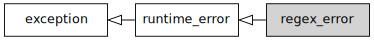

std::regex_error
From cppreference.com
| Defined in header <regex>
|
||
| class regex_error; |
(since C++11) | |
Defines the type of exception object thrown to report errors in the regular expressions library.


Inheritance diagram
Contents[hide] |
[edit] Member functions
constructs a regex_error object (public member function) | |
gets the std::regex_constants::error_type for a regex_error (public member function) |
Inherited from std::exception
Member functions
| [virtual] |
destroys the exception object (virtual public member function of std::exception)
|
| [virtual] |
returns an explanatory string (virtual public member function of std::exception)
|
[edit] Example
Run this code
#include <regex> #include <iostream> int main() { try { std::regex re("[a-b][a"); } catch (const std::regex_error& e) { std::cout << "regex_error caught: " << e.what() << '\n'; if (e.code() == std::regex_constants::error_brack) { std::cout << "The code was error_brack\n"; } } }
Possible output:
regex_error caught: The expression contained mismatched [ and ]. The code was error_brack